| 日付 | 2026年8月6日（木） - 2026年8月10日（月） | ||||||||||
|---|---|---|---|---|---|---|---|---|---|---|---|
| 山域 | 中央アルプス | ||||||||||
| メンバー | 単独 | ||||||||||
| 山行形態 | 4泊5日避難小屋、テント泊 | ||||||||||
| アクセス | 電車、バス、タクシー | ||||||||||
| ルート (Map) |
|
3日目
朝食を取ったら水を汲みに行く。最終日の下山途中まで水は無いかもしれないので限界まで汲む。
合計4.5L。これで下山まで行ける算段だ。
右の水受けには、昨日はいなかった虫が大量にいて気持ち悪い。
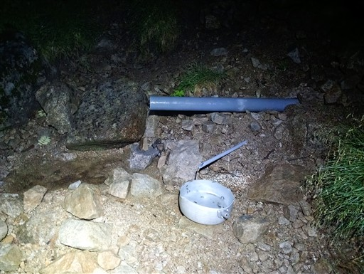
夜明け前の4時過ぎに出発。4.5kgの水がとてつもなく重い。
昨日の雨で水を含んだテントも重い。自分の耐荷重の限界を超えている。
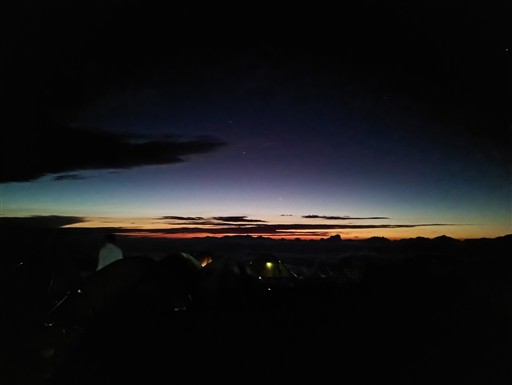
暗闇の檜尾岳に到着。
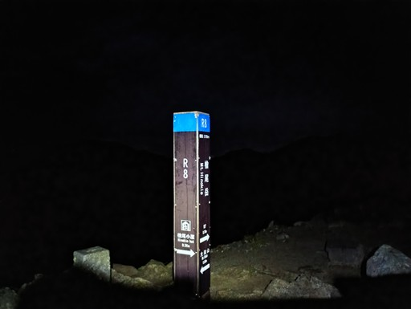
東の空が明るくなってきた。
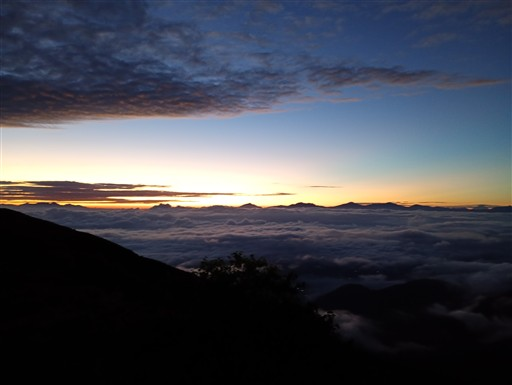
大滝山を通過。
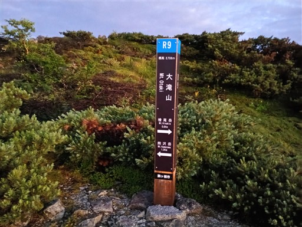
歩いてきた道を振り返る。右手に見えるのが檜尾小屋だ。
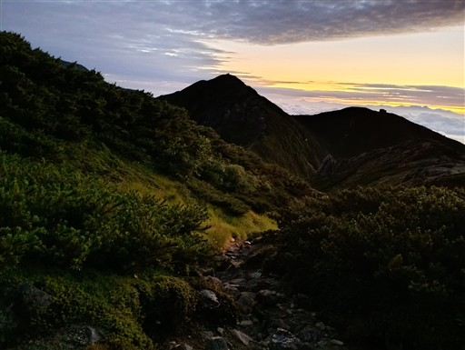
こちらはこれから歩く稜線。
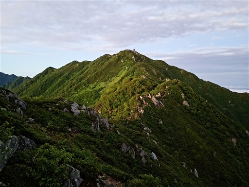
日の出間近。どこかで待つということはせず歩き続ける。
展望の良い稜線だから、どこでも御来光は拝めるだろう。
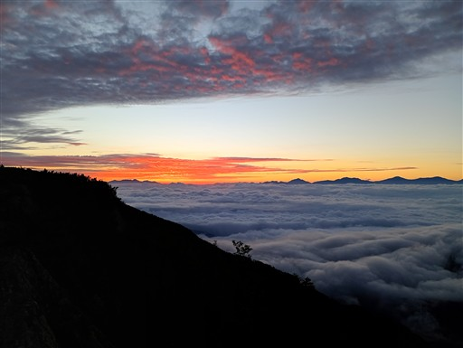
岩場。タフな稜線歩きが続く。
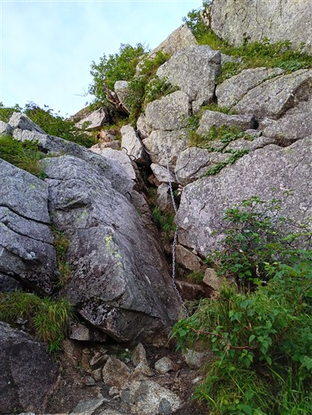
適当な岩場で御来光を迎える。
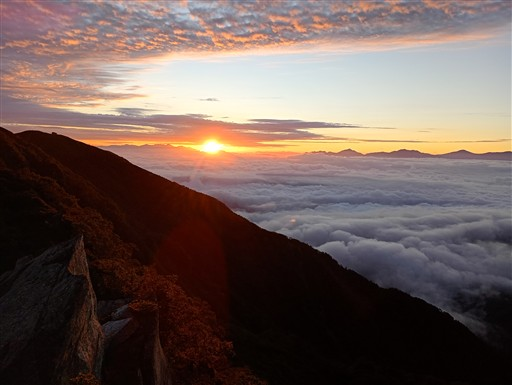
周囲が赤く輝きだす。
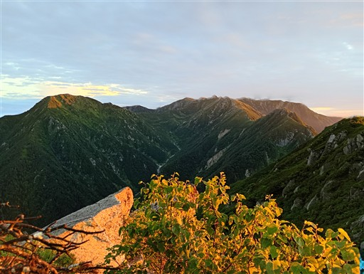
モルゲンロートに染まる空木岳。
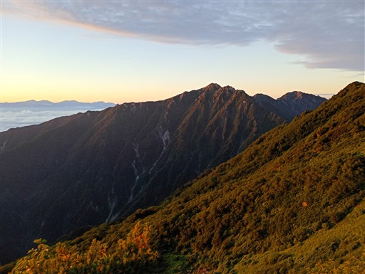
熊沢岳を通過。
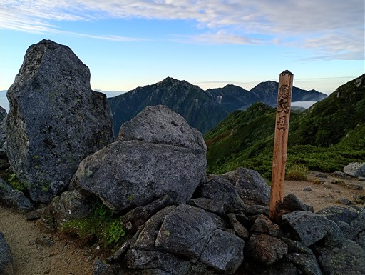
本日も御嶽山は雲の上に頭を出している。
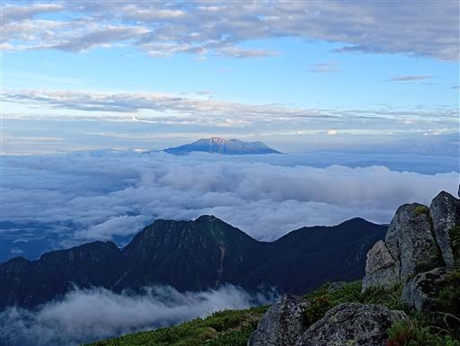
折り重なって見える山々。右手奥が富士山だ。
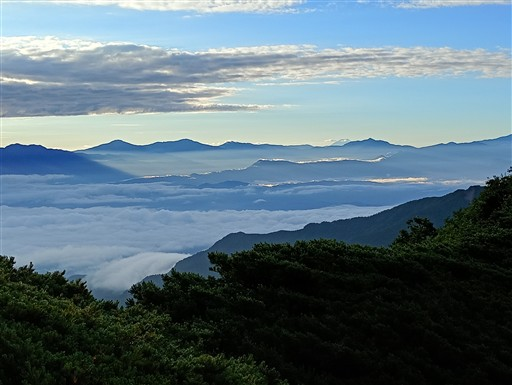
長い縦走路。テント場から空木岳は近くに見えたが歩くと結構長い。
右奥には、空木岳の先の南駒ヶ岳が見えている。
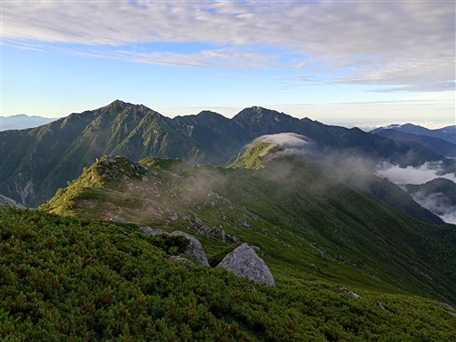
これは何だろう？調査中とのこと。
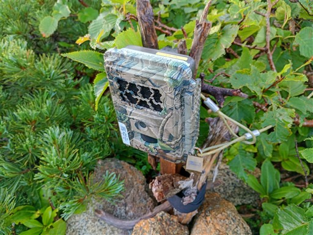
東川岳への登りの岩場。なかなか楽をさせてくれない登山道だ。
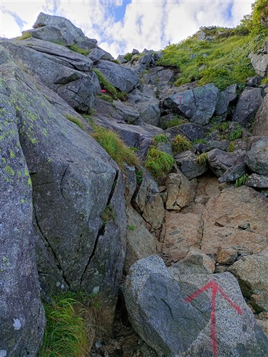
歩いてきた稜線。ダイナミックな地形だ。
木曽駒ヶ岳～空木岳のメインルートだけでも難易度はそれなりに高い。
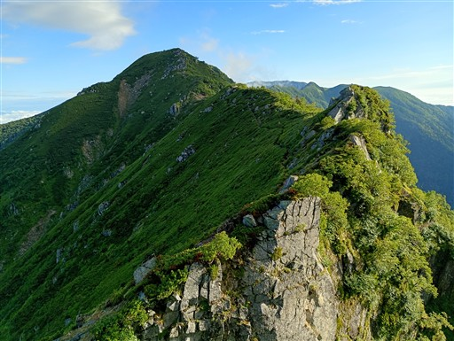
東川岳に到着。
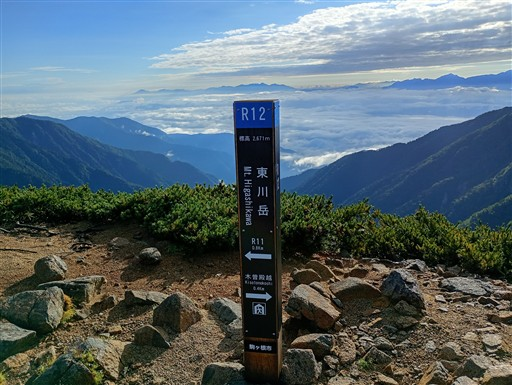
ピンクテープで囲われている場所がある。
植物保護のためかと思って調べたら、ヘリの物資輸送の目印らしい。
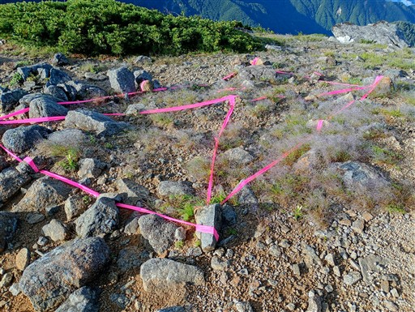
目の前に聳える空木岳。かなりの迫力だ。
鞍部からあのピークまで400m近く登らなくてはならない。
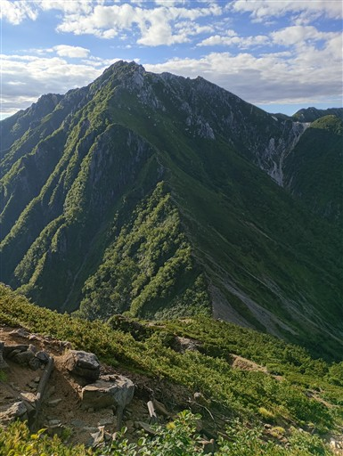
振り返って東川岳。こちらもなかなか立派な山容だ。
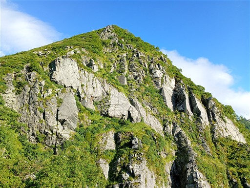
木曽殿山荘が見えてきた。狭い鞍部に建っている。
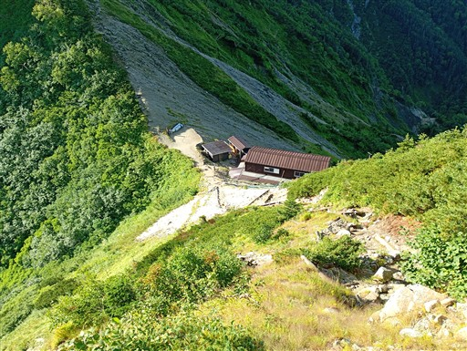
木曽殿越に到着。
この近くにも水場があるが、往復に時間がかかるのと、ここまで大した登りがないことから
檜尾小屋で全て汲んできた。でも、ここまでで案外疲れてしまった。
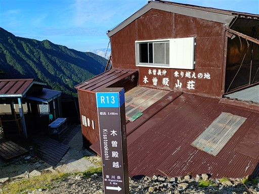
さて、ここからが本日最大の登りだ。
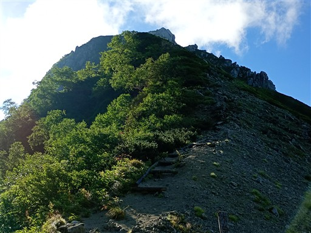
北側の主稜線には雲がかかり始めている。まだ7時過ぎなのに、今日は雲がかかるのが早い。
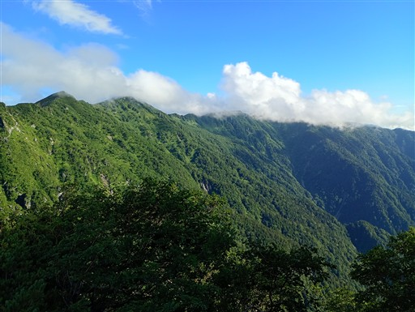
空木岳頭上も雲が出始めている。ちょっと間に合わないだろうか？
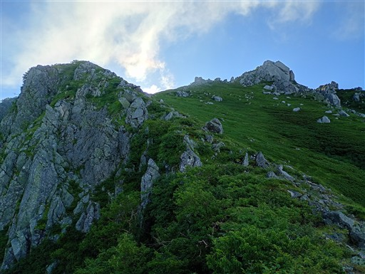
過ぎ去っていく雲に虹ができている。
日陰にいて、自分の影が写っていないのでブロッケン現象とは呼べないのだろうか？
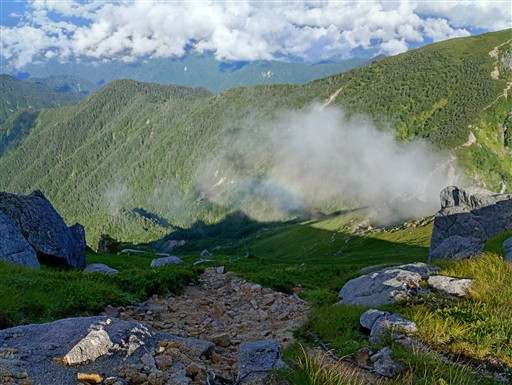
岩尾根が続く美しい山。結構きつい登りだ。
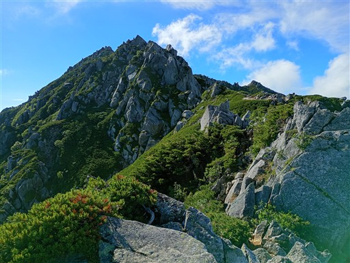
南駒ヶ岳もバッチリ見えている。今のところ天気は大丈夫そうだ。
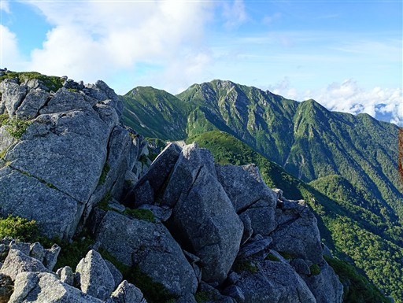
巨岩連なるとんでもない山容。山頂が遠い。
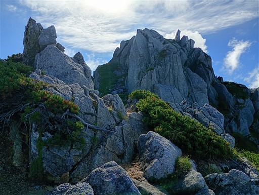
山頂直下は岩場が続く。楽できない登山道だ。
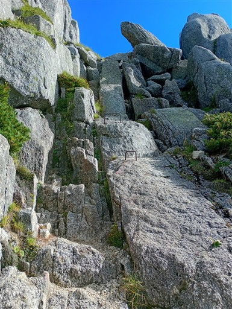
上から岩が落っこちてきそう。
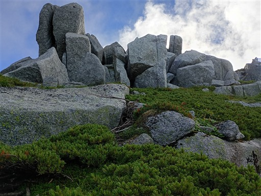
何度かの偽ピークを過ぎ、本当の山頂が見えてくる。
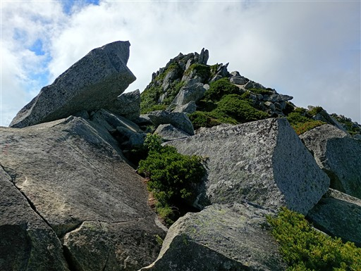
空木岳に到着。標高2864m。
後の岩が一番標高が高そうなので登ってみる。
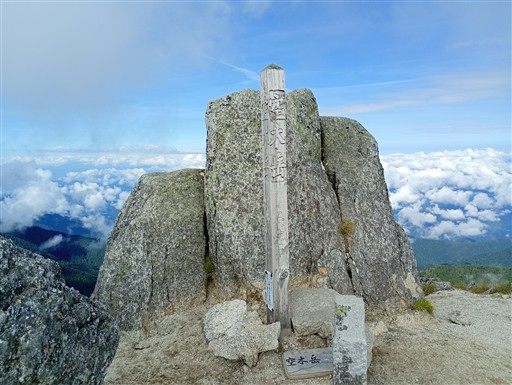
山頂周辺の風景。だいぶ雲が増えてしまった。
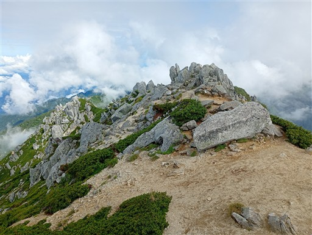
眼下の駒峰ヒュッテ。こちら側から、もう登ってきている人がいる。
日帰りの健脚組だろう。
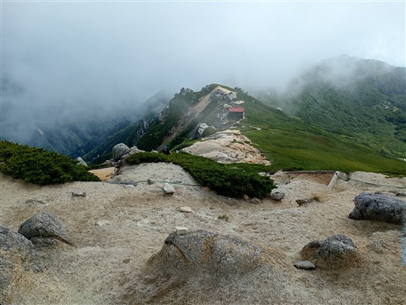
これから向かう稜線。南駒ヶ岳は残念ながら雲に覆われてしまった。
大変な登りではあったが、素晴らしい山容、展望で紛れもなく名峰と言える山だ。
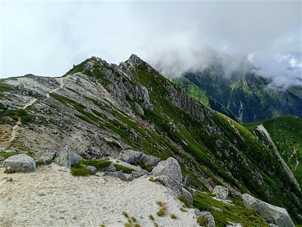
空木岳を後にする。巨大な花崗岩の塊のような山だった。
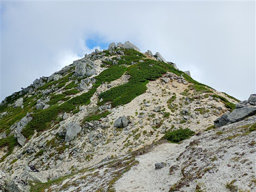
ここから先、縦走路は続く。本日の最大の登りは終えたのでだいぶ気は楽だ。
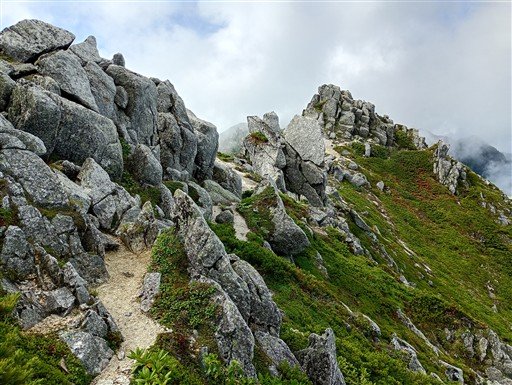
まずは目の前の赤椰岳。これが疲れた体には結構遠い。
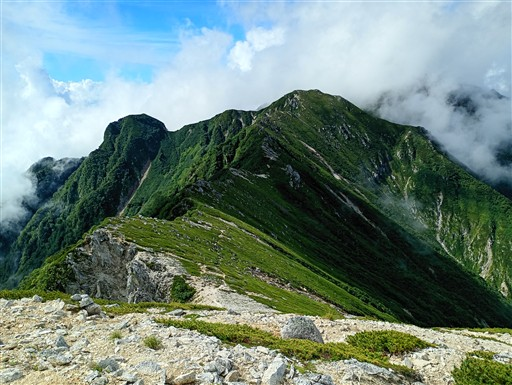
追悼碑。なんか中央アルプスはこの手のものが多い。
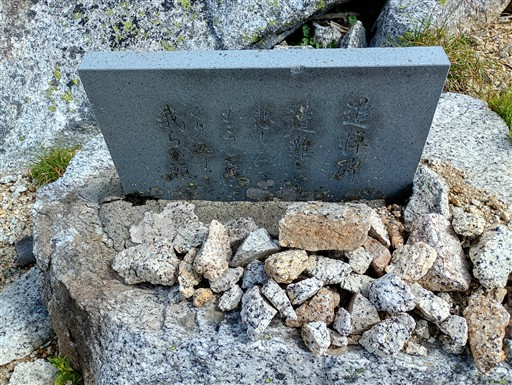
この辺りから道が細くなってくる。ハイマツの切り開きが狭く、足に当たって負荷がかかる。
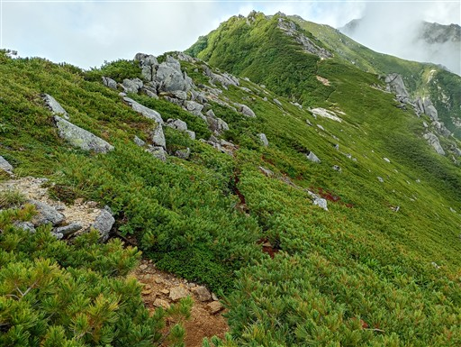
せわしなく歩いている芋虫を発見。
検索するとミヤマセダカモクメの幼虫とそっくり。恐らくこれかな。
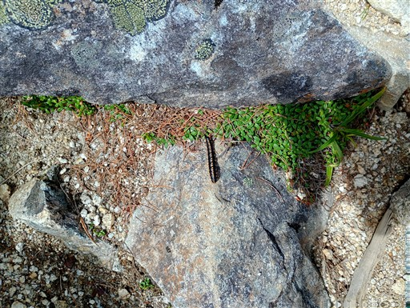
赤椰岳の山頂が見えてきた。
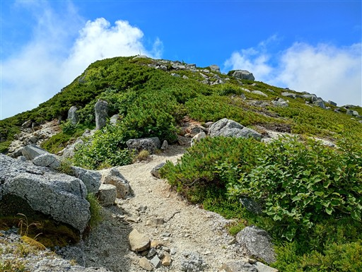
山頂に到着。疲労が大きくてだいぶペースが落ちている。
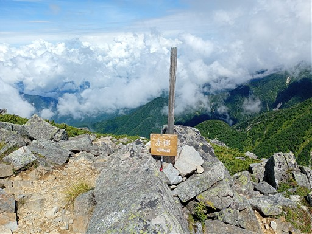
振り返って空木岳を見上げる。
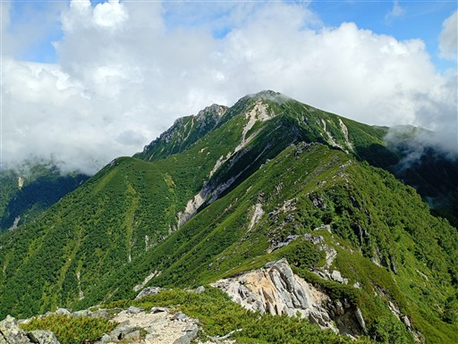
そしてこれから向かう南駒ヶ岳も姿を現している。
また結構登りがありそうだ。
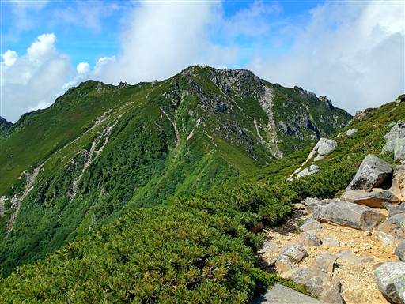
擂鉢窪カールは亀裂が発見されて危険ため立入禁止。
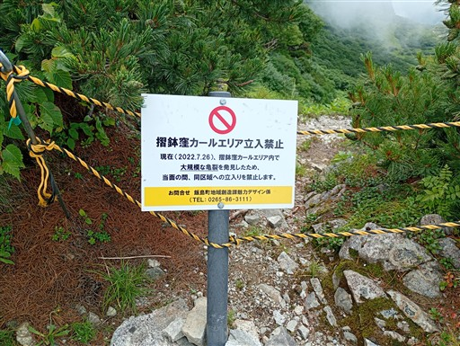
擂鉢窪避難小屋が見えている。すごく美しそうな場所に建っているのだが。
立地的にも、ここから南に向かう人に取って極めて重要な小屋だった。
南駒ヶ岳への登りもまた厳しい。
ようやく山頂部が見えてきた。
南駒ヶ岳山頂に到着する。標高2841m。
山頂直下で一人とすれ違ったが、山頂は無人だ。
ここも、奥の岩が一番標高が高そうなので、とりあえず立ってみる。
歩いてきた稜線。雲は多いがまだ展望は少しある。
次なるピーク、仙涯嶺に向けて歩を進める。
摺鉢窪避難小屋が使用禁止な理由がこれ。かなり危険な場所に建っている。
これで地面に亀裂が見つかれば、確かに恐ろしい。
ザレた斜面は滑りやすい。
そして覆いかぶさるハイマツ。かなり鬱陶しいい。
背の高いハイマツは大きなザックに引っかかり、通過にかなり苦労する。
この辺りはお花畑が美しい。地味な花が多いが、様々な色の花が咲き乱れている。
仙涯嶺が姿を現す。かなり風格のある山だ。
今からここを登り返すのか？
鞍部のザレた斜面は滑りやすく緊張する場所だ。足を置く場所に気を使う。
楽をさせてくれない登山道が続く。
崖ではないが、それでも足を滑らせると危険。
最初の方の岩峰は巻いていく。岩でできた壁が突き立っている。
そして岩場。ザックの重さ、難易度の高い登山道、
どちらかであれば耐えられるが、両方は辛い。
岩の間を乗り越えてきた鎖場を見下ろす。
仙涯嶺山頂に到着。標高2734m。
かなり疲れた。ちょっと時間がかかりすぎだ。
山頂標識はあるが、すぐ隣のピークの方が高く見える。
山頂には容易に行けそうなため、ザックを置いて休憩がてら登ってみることにする。
岩の上から、先ほどの標識のあったピークを見下ろす。
ここが最高点か、奥の方に見える岩峰の方が高いかもしれない。
下山開始。振り返って南駒ヶ岳と仙涯嶺。岩だらけの稜線だ。
鞍部に向かって下っていく。
またまたハイマツの道。苦しい。
テントを張れそうな整地された場所。闇テンする人が多いのだろう。
誰だって越百小屋まで下りたくなんてない。
この辺りでスマホを落とし、画面が割れてしまう。手つき、足取りがかなり緩慢になってきている。
雲の間から越百山が見えてきた。最後の登り、あと一踏ん張りだ。
ピンクリボンが落ちている小枝に巻かれている。風がちょっと吹けば吹っ飛びそうだが…
この辺りは苔が豊富だ。
越百山の山頂に到着。標高2614m。
かなり時間がかかり、だいぶ疲れてしまった。
累積標高は大したことが無いはずだが、ザックの重さと登山道の難易度が疲労度を増大させた。
遠くで雷鳴が聞こえている。少し休憩したら越百小屋に向けて歩を進める。
越百小屋までは稜線から300m弱、40分ほど下る必要がある。
なんでこんな場所に小屋を建てたのか…
樹林帯の中に入る。この後、大雨が降ってくる。小屋まで間に合わなかった。
あわててカッパを着る。
越百避難小屋に逃げ込む。中はきれいに清掃されている。
今年は越百小屋は閉鎖されていて、避難小屋のみが開いている。
濡れたカッパ、靴、そしてテントなどを干して乾かす。湿気が高いのであまり乾かないが…
外の様子。雨は降り止まず、小屋の外観の撮影もできない。
夜中遅くまで雨は降り続き、雷が鳴り続けていた。
夕飯はナポリタン。ケチャップの量が足りず、味が薄くてかなり辛かった。